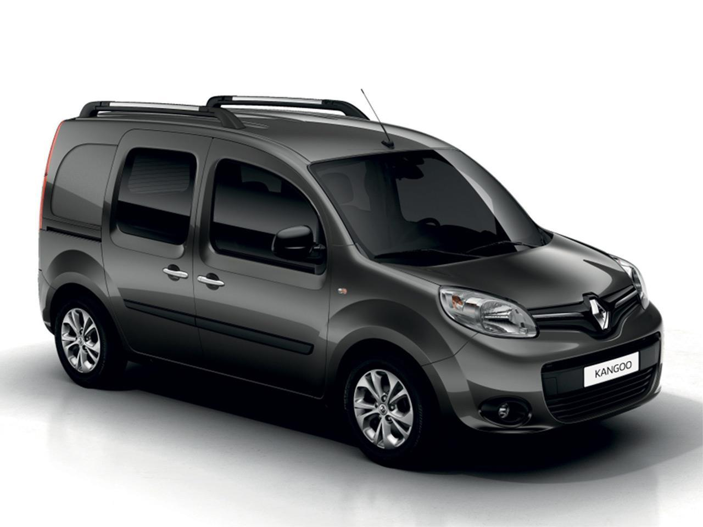

TIPO DE TRANSPORTES
Crafter Cargo Van 3.5t.
Descripcion:
*Motor de 4 cilindros
*Peso bruto vehicular 3,500 kg
*Tanque de combustible (l) 75
*Transmisión manual de 6 velocidades con palanca de cambios tipo "Joystick"
*Frenos delanteros de disco ventilado de 16" (303mm)
Crafter Cargo Van 4.9t.

Descripcion:
*Motor de 4 cilindros
*PBV Peso bruto vehicular (Kg) 4,900
*Tanque de combustible (l) 75
*Transmisión manual de 6 velocidades con palanca de cambios tipo "Joystick"
*Frenos delanteros de disco ventilado de 16" (303mm)
Crafter Cargo Van 5.0t.

Descripcion:
*Motor de 4 cilindros
PBV Peso bruto vehicular (Kg) 5,000
*Tanque de combustible (l) 75
*Transmisión manual de 6 velocidades con palanca de cambios tipo "Joystick"
*Frenos delanteros de disco ventilado de 16" (303mm)

Términos y condiciones por Volkswagen de México:
Este sitio es oficial de Volkswagen de México, S.A. de C.V.; la información aquí referida, así como las ilustraciones de este sitio están de acuerdo a las versiones y equipamientos ofertados por el proveedor dentro de la República Mexicana y son las más recientes en el momento de hacer esta publicación. Algunas versiones y equipamientos son opcionales, por lo que los costos de los vehículos aquí ofertados pueden variar y podrían tener un costo extra. Los valores obtenidos sobre rendimientos en Ciudad, carretera y combinado son valores obtenidos en pruebas de laboratorio bajo condiciones controladas. Para conocer la disponibilidad de nuestros productos y para mayor información se recomienda acudir a su Distribuidor autorizado Volkswagen dentro de la República Mexicana.